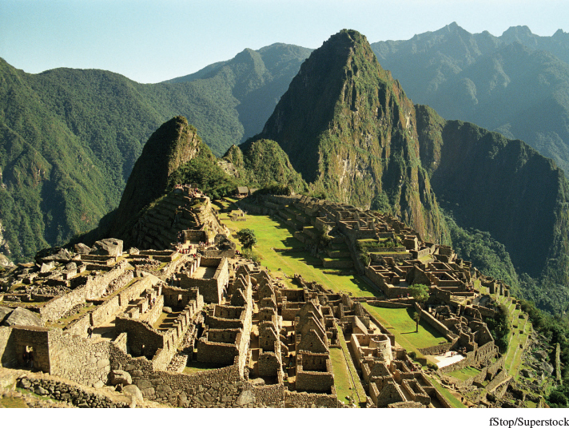

Machu PicchuMachu Picchu, high in the Andes Mountains, was constructed by the Incas in the fifteenth century on a spot long held sacred by local people. Its 200 buildings stand at some 8,000 feet above sea level, making it a “city in the sky.” It was probably a royal retreat or religious center, rather than serving administrative, commercial, or military purposes. The outside world became aware of Machu Picchu only in 1911, when it was discovered by a Yale University archeologist.(fStop/Superstock)